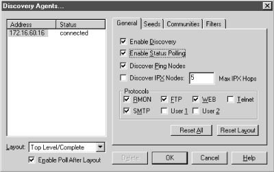

6.2.1. SNMPc's Map
Once SNMPc is up and running, you will see
any devices it has discovered in the Root map view.
Figure 6-8 shows the main button bar. The far right
button (the house) gets you to the highest level on the map. The
zooming tools allow you to pan in and out of the map, increasing or
decreasing the amount of detail it shows. You can also reach the Root
submap by selecting "Map View

Root submap" from
the View menu.
Figure 6-8. SNMPc main button bar
6.2.2. Discovery and Filters
Once you are done playing around with
your maps, it's time to start tuning your polling parameters.
Go to "Config
Discovery Agents." This should bring
up a menu that looks like
Figure 6-9. Looking at
the menu tabs, it's easy to tell that you will be able to
configure your Seeds, Communities, and Filters here. SNMPc filters
are equivalent to OpenView filters, but much simpler.

Figure 6-9. SNMPc Discovery Agents menu
The General tab lets you
control SNMPc's polling and discovery behavior. The checkbox
for enabling and disabling discovery is self-explanatory. The
"Enable Status Polling" checkbox determines if SNMPc will
ping the nodes on your network periodically to
determine whether or not they are responding. By default, all nodes
are polled every 10 to 30 seconds. To change these default values,
you can either edit the properties of each device (one by one),
select and highlight multiple devices (using your Ctrl key), or use
the object selection tool. You can bring up this tool by using the
third button from the left on the main button bar or by going to
"View
Selection Tool." The "Discover Ping
Nodes" checkbox lets you specify if you want to discover
devices that have an IP or IPX entity but do not have an SNMP agent.
"Discover IPX Nodes" gives you the option of discovering
IPX devices. SNMPc will also check if a device supports various
protocols such as SMTP, HTTP, etc. This feature allows you to set up
custom menu items based on what services the device is running. The
Protocols section of the General tab lets you specify the protocols
for which SNMPc will test.
The Seeds tab allows you to specify SNMP
devices that will help the discovery process along. This tab allows
you to specify more than one seed IP address. (Remember that
you're asked for a seed address device when you install the
product.)
The Communities tab
lets you specify the community strings for your network. You can
specify multiple community names; SNMPc will try the different
community names when discovering your nodes. Once SNMPc figures out
which community is correct for a given device, it inserts the
community string in the "Get Community" attribute for
that particular device. This simply means the newly discovered device
will be saved with its community string.
The final tab, Filters, allows you to
exclude certain IP addresses from being discovered. You can specify
individual addresses, or use an asterisk (*) as a wildcard to specify
entire networks.
6.2.3. Loading MIBs into SNMPc
Like any reasonably comprehensive network-management product, SNMPc
can load and compile new MIBs. To do so, select "Config
MIB Database" from the main menu bar. This window lets you
specify the path to the MIB file and gives you full feedback about
the status of the compilation, etc. Click on the "Help"
button for more information about MIB
compilation.
SNMPc is a compact NMS that provides some added features, such as
trend reporting. A thorough treatment of its installation is beyond
the scope of this book. The online help system that comes with SNMPc
is very good, and we recommend you take full advantage of
it.